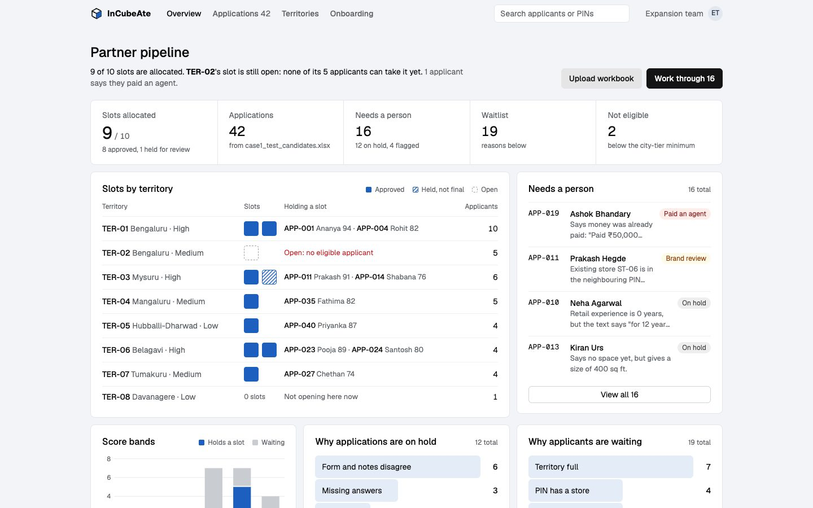
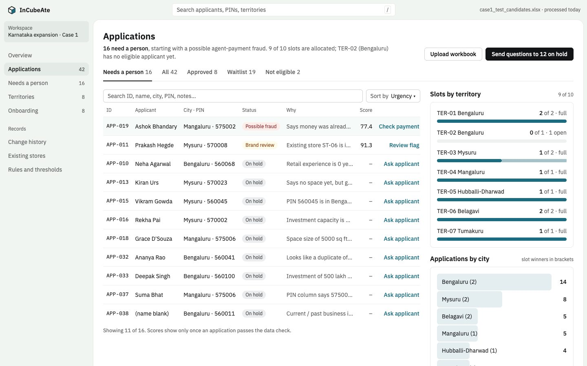
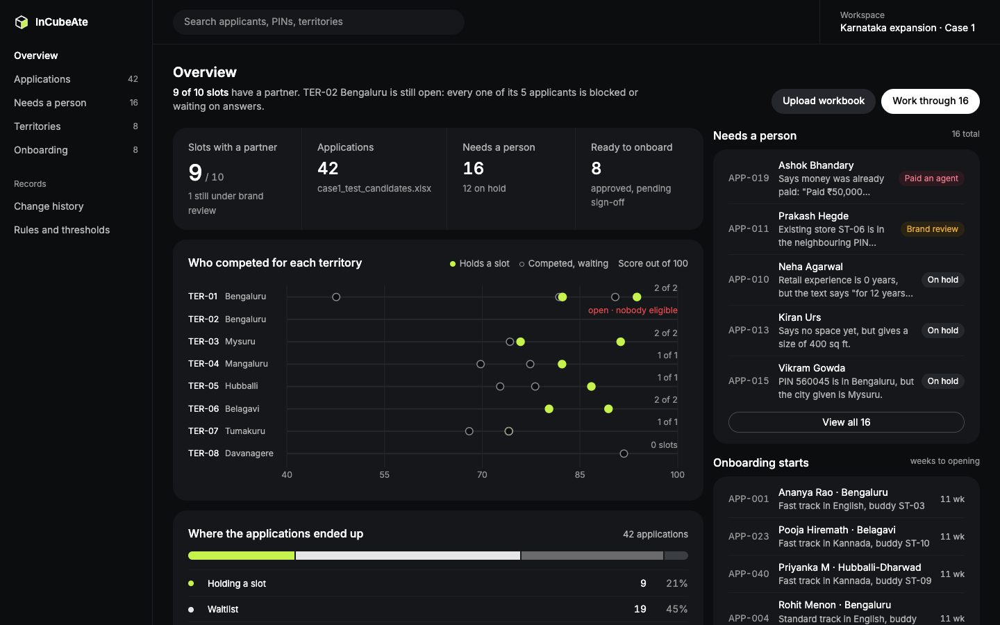
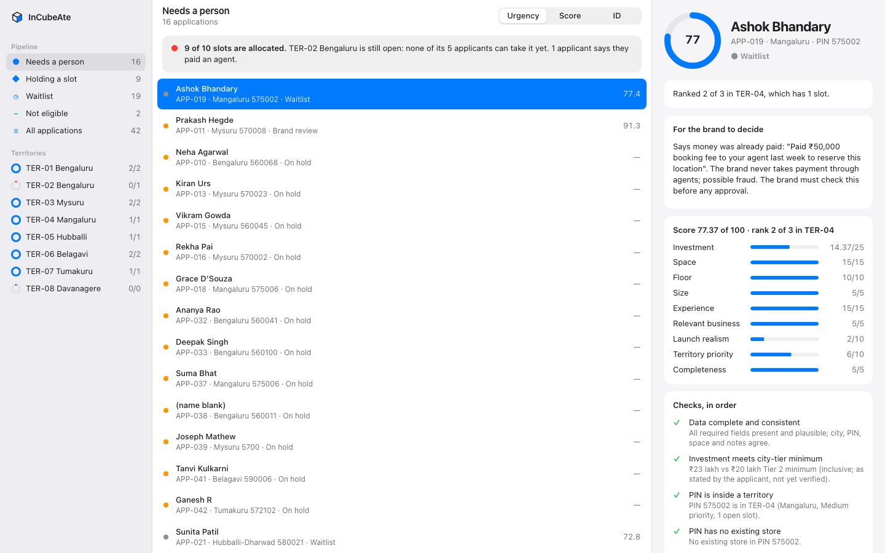
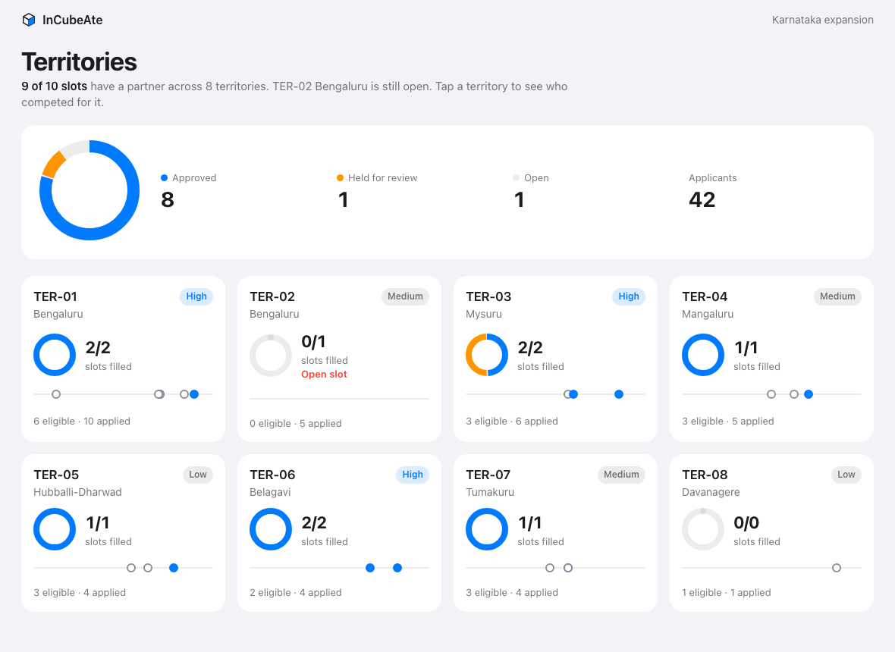
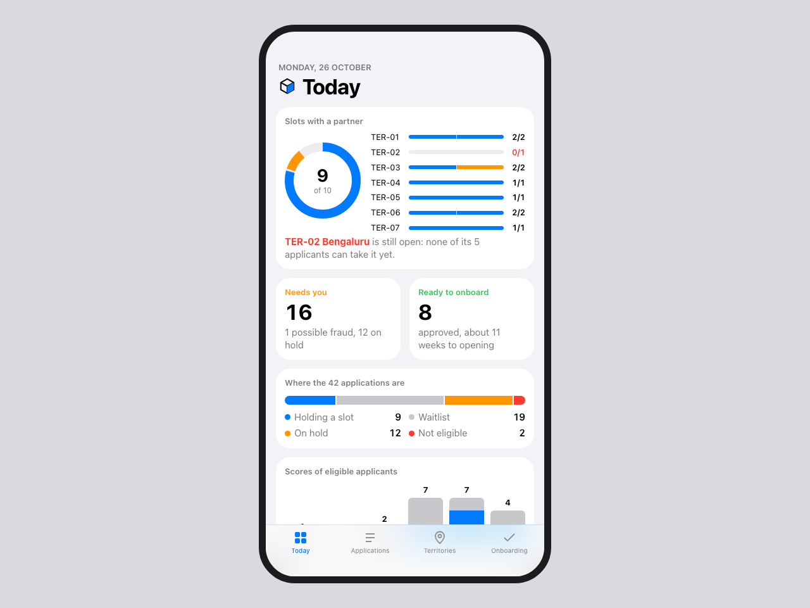

Six working screens for the franchise expansion team, each running the real decision engine on the 42-applicant test file: Karnataka territories, competing applicants, holds, flags and onboarding plans. Every figure is computed live in the page, so the six agree with each other and with the app.
Built with the taste skill's app-screen rules: colour only on data, flat surfaces, one finding stated first.

A quiet report. The slot board shows every territory's slots as squares; the open TER-02 slot is in red.
Look at: slot board, score bands, hold and waitlist reasonsOpen the screen
A work queue for long sessions: status tabs, a one-click action on each row, slots and cities on the side.
Look at: row actions, territory plan bars, training languagesOpen the screen
A dark overview whose rank strip plots every eligible applicant by score, territory by territory.
Look at: rank strip, where applications ended up, onboarding startsOpen the screenBuilt with the Apple design skill: system type, translucent bars, spring motion you can grab and redirect. Each follows your light or dark setting.

Sidebar, list and inspector. Pick a view or territory, sort with the segmented control, read one applicant in full.
Try: click rows, press ↑ ↓, switch Urgency / Score / IDOpen the screen
A card per territory with its ring and contenders. Tap one for a sheet with the PIN map and ranked contenders.
Try: tap TER-03, drag the sheet down or flick itOpen the screen
Widgets for slots, the pipeline and scores, with a card carousel of applicants who need a person.
Try: scroll, swipe the Needs a person cardsOpen the screen